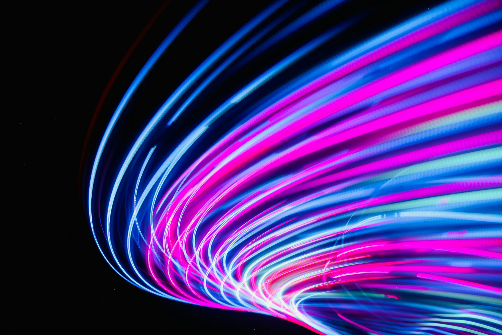
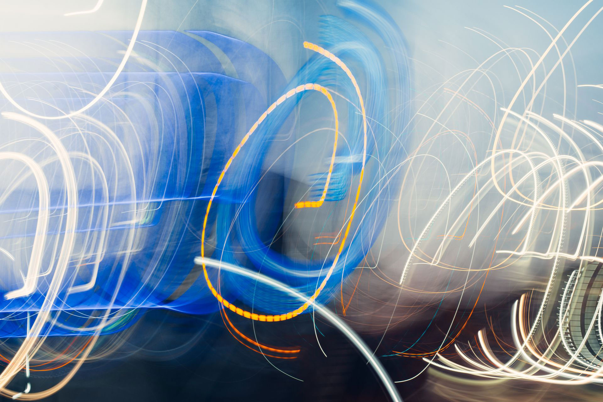
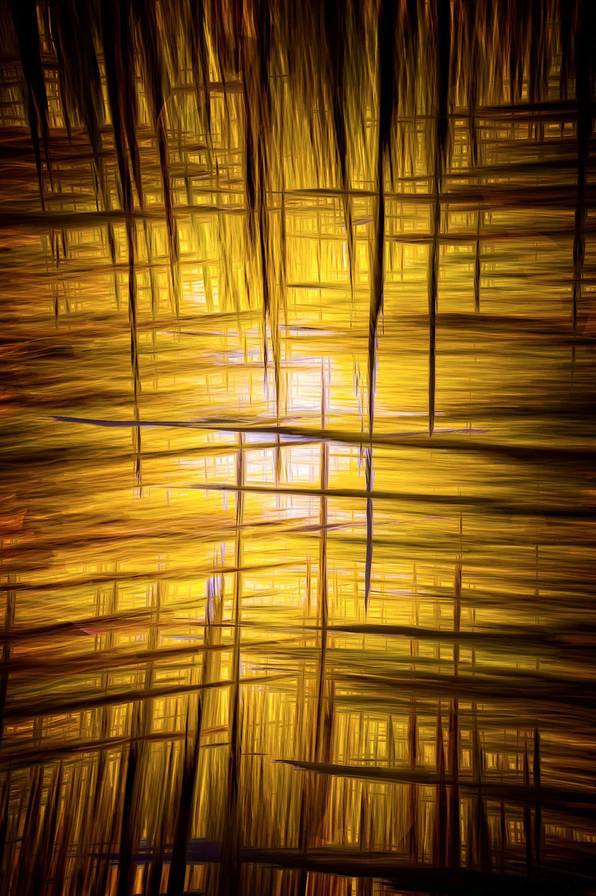
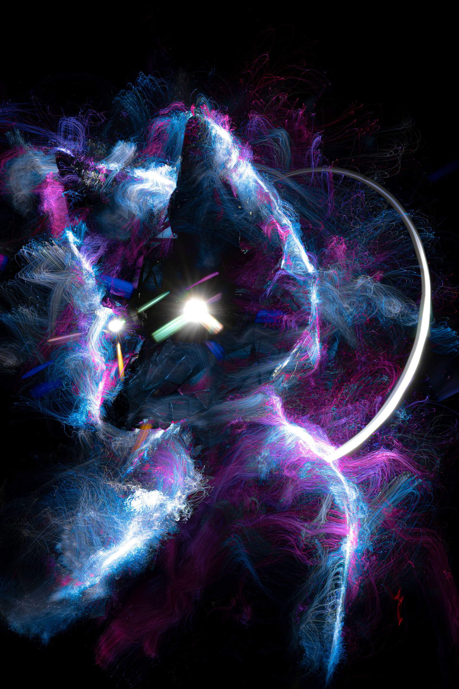
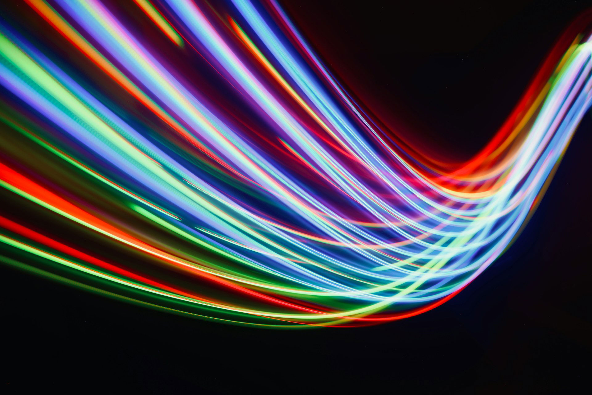

Be among the first to see.
Discover After the Light. Subscribe for exclusive access to advance tickets.

Slide 2 of 3: Residual Bodies, Mara Klien, 2026
Residual Bodies
Mara Klien, 2026
Selected works.
-
Between Matter Iris Voss, 2023 -

Quiet Tension (sample) Mara Klien, 2022 -

Soft Geometry Elian Park, 2024
Slide 3 of 3: Quiet Tension (sample), Mara Klien, 2022

New ways of seeing.
Iris Voss Light Photography / Berlin
Iris Voss transforms light into sculptural forms, exploring the fragile boundary between the visible and the intangible.
Noa Sato Light Photography / Kyoto
Noa Sato captures fleeting moments of illumination, revealing the quiet relationship between light, time, and memory.
Mara Klein Light Photography / Amsterdam
Mara Klein traces movement through darkness, creating luminous compositions that exist somewhere between presence and disappearance.
Elian Park Light Photography / Seoul
Elian Park uses light as a visual language, constructing abstract geometries that challenge our perception of space, depth, and colour.
An open field.
FORM is an independent space for digital art and experimental expression. We bring together artists working at the edges of image, material and possibility.